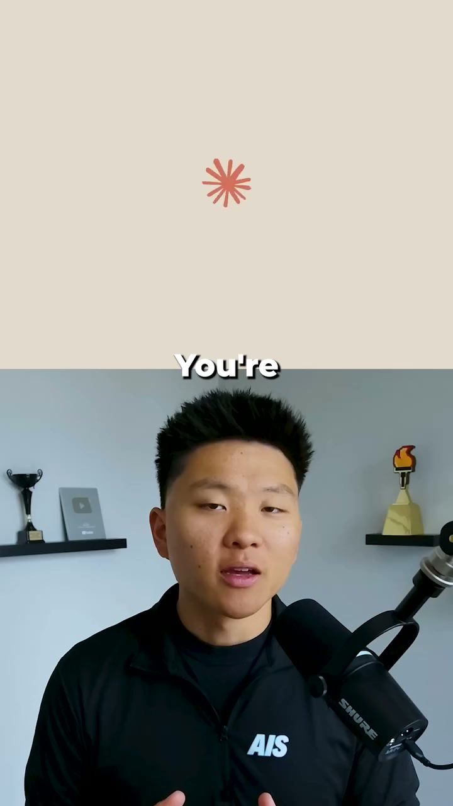

Facebook Reel｜Nate Herk：面向一般人的 Claude 入門系列（Part 1）

一句話摘要
這支 Reel 是 Nate Herk 宣稱的三集 Claude 入門系列第一集，目標是把 Claude 以較容易理解的方式介紹給一般使用者；公開可讀資訊不足以重建完整內容，故不把它延伸解讀成特定功能教學。
公開可讀取內容
Facebook 未登入公開頁面可確認：
- 作者：Nate Herk。
- 文案：`Part 1 of a 3 part series dumbing down Claude for everyone`。
- 標籤：`#viral #facebookviral #topusa`。
- 類型：Facebook Reel。
封面是一位對著麥克風講述的創作者畫面，畫面中可辨識到單字 `You're` 的片段字幕；沒有足夠文字可可靠推得完整句子或教學主題。
為什麼值得記錄
「把 Claude 講到每個人都能懂」反映 AI 教學的第一個關卡通常不是功能數量，而是建立正確的期待：AI 可以協助整理、起草、分析與反覆對話，但答案需要使用者提供情境、檢查事實並對結果負責。
若這個系列後續釋出可讀文字、逐字稿或具體操作步驟，可再補充到本條目的相關來源中；在那之前，把它視為入門內容線索，而不是可直接複製的完整工作流。
對 AI 初學者的實用原則
- 從一個具體任務開始，例如「把這段會議筆記整理成待辦」或「幫我比較兩個方案」，不要只問「Claude 可以做什麼」。
- 一次提供必要背景、目標、輸出格式與限制，結果會比一句模糊問題更可靠。
- 涉及數據、引用、醫療、法律、財務或重要決策時，要回到原始資料查核。
- 不要貼入帳密、API key、未公開名單、客戶機密或他人敏感資料。
原始連結
- Facebook 原始分享：https://www.facebook.com/share/r/1F5SLe28xn/?mibextid=wwXIfr
- Facebook 解析後 Reel：https://www.facebook.com/reel/1079309988129366
擷取限制
Facebook 的未登入頁面受登入彈窗限制，無法取得影片完整音訊、逐字稿或逐格畫面。本文已保存公開封面作為來源證據，並只陳述可由公開文案、作者資訊與封面直接支持的內容；沒有將「Part 1」自行補成任何特定 Claude 功能或教學結論。